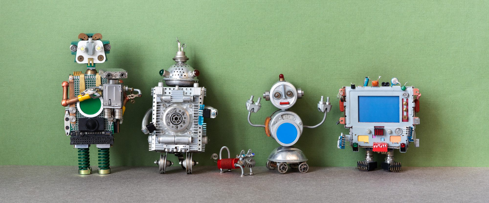
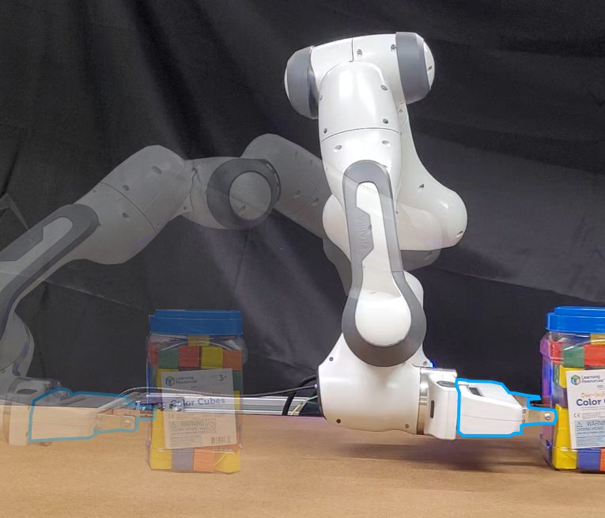
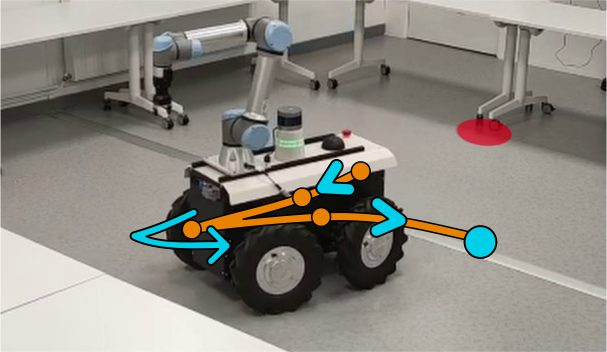
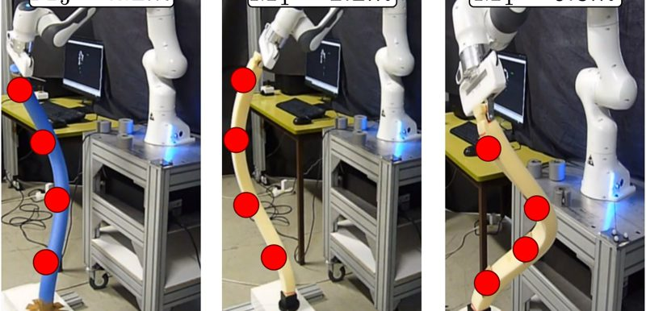
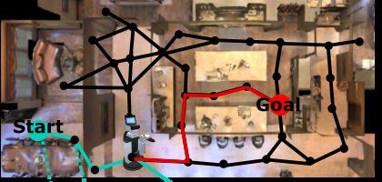
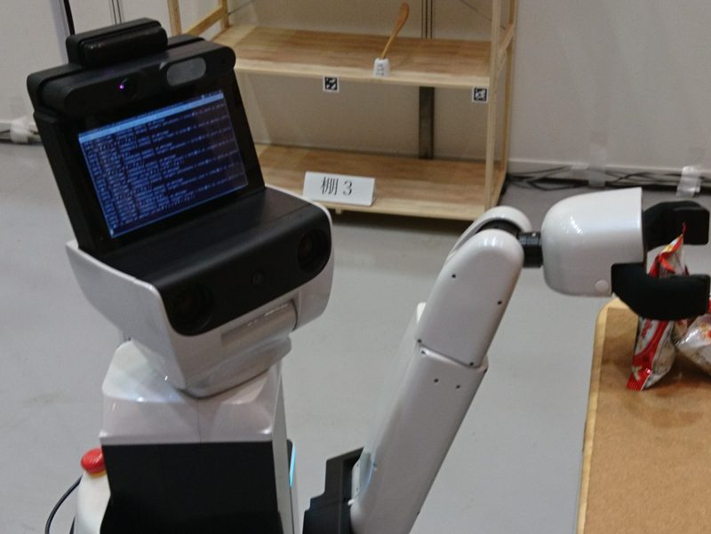
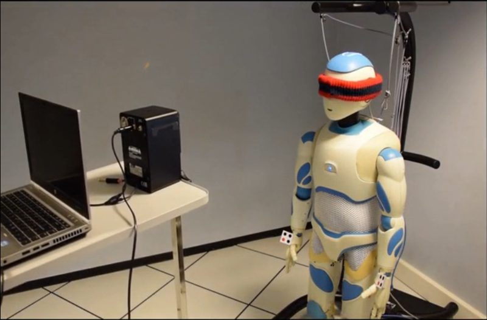

Aly Magassouba
Assistant Professor in Robotics and AI
School of Computer Science, University of Nottingham, UK
I'm an Assistant Professor in the School of Computer Science at the University of Nottingham and a member of the Cyber-physical Health and Assistive Robotics Technologies (CHART) group. My research centres on assistive robots, giving robots the ability to interpret and act in the real world so they can work flexibly alongside people.
News
- Sep 2026PhyPush, sensorless physical property estimation with physics-guided transformers, presented at IROS 2026. arXiv
- Jun 2026ManeuverNet, precise manoeuvring of double-Ackermann-steering robots, at ICRA 2026. arXiv
- May 2025The CHART RoboNotts team wins the Physical Robotic Caregiving Challenge (bed-bathing track) at ICRA 2025.
Research
Learning to assist with AI and robots in the real world.
Communicating with humansBridging communication gaps with common-sense, personalisation and training support.
Perceiving and understanding the worldSolving the ambiguities of the world with multimodal perception.
Physically interacting with the worldInteracting safely with complex objects in complex environments.
Selected publications

PhyPush: One Push is All You Need for Sensorless Physical Property Estimation with Physics-Guided Transformers
IEEE/RSJ International Conference on Intelligent Robots and Systems (IROS), 2026. arXiv
ManeuverNet: A Soft Actor-Critic Framework for Precise Maneuvering of Double-Ackermann-Steering Robots with Optimized Reward Functions
IEEE International Conference on Robotics and Automation (ICRA), 2026. arXiv
Multi Actor-Critic DDPG for Robot Action Space Decomposition: A Framework to Control Large 3D Deformation of Soft Linear Objects
IEEE Robotics and Automation Letters 9(2), 1318–1325, 2024. DOI
CrossMap Transformer: A Crossmodal Masked Path Transformer Using Double Back-Translation for Vision-and-Language Navigation
IEEE Robotics and Automation Letters 6(4), 6258–6265, 2021. DOI
A Multimodal Classifier Generative Adversarial Network for Carry and Place Tasks From Ambiguous Language Instructions
IEEE Robotics and Automation Letters 3(4), 3113–3120, 2018. Presented at IROS 2018; RoboCup Best Paper Award DOI
Aural Servo: Sensor-Based Control From Robot Audition
IEEE Transactions on Robotics 34(3), 572–585, 2018. DOI
Projects and leadership
- 2024–presentLeading RoboNotts, the University of Nottingham's student robotics team. Winner of the Physical Robotic Caregiving Challenge (bed-bathing track) at ICRA 2025.
- OngoingVirtual role simulator, a research platform for studying and training empathy in meaningful conversations.
- OngoingEmpathic Home, AI models of a home or building to improve the well-being of its occupants.
Positions
- 2024–presentAssistant Professor in Robotics and AI, University of Nottingham, UK
- 2021–2023Contractual Assistant Professor, Institut Pascal, Clermont Auvergne INP, France
- 2017–2021Research Fellow, National Institute of Information and Communications Technology (NICT), Kyoto, Japan
Education
- 2016PhD in Signal Processing and Robotics, Inria/IRISA, Université Rennes 1, France
- 2012MSc in Robotics and Intelligent Systems, Université Paul Sabatier, Toulouse, France
- 2010BSc in Robotics and Intelligent Systems, Université Paul Sabatier, Toulouse, France
Awards
- 2025Winner, Physical Robotic Caregiving Challenge (bed-bathing track), ICRA 2025, with the CHART RoboNotts team
- 2019Japanese Society for Artificial Intelligence Annual Conference Award
- 2018IROS RoboCup Best Paper Award
- 2018Winner, World Robot Summit, Partner Robot Challenge (Virtual Space)
- 2018Japanese Society for Artificial Intelligence Award